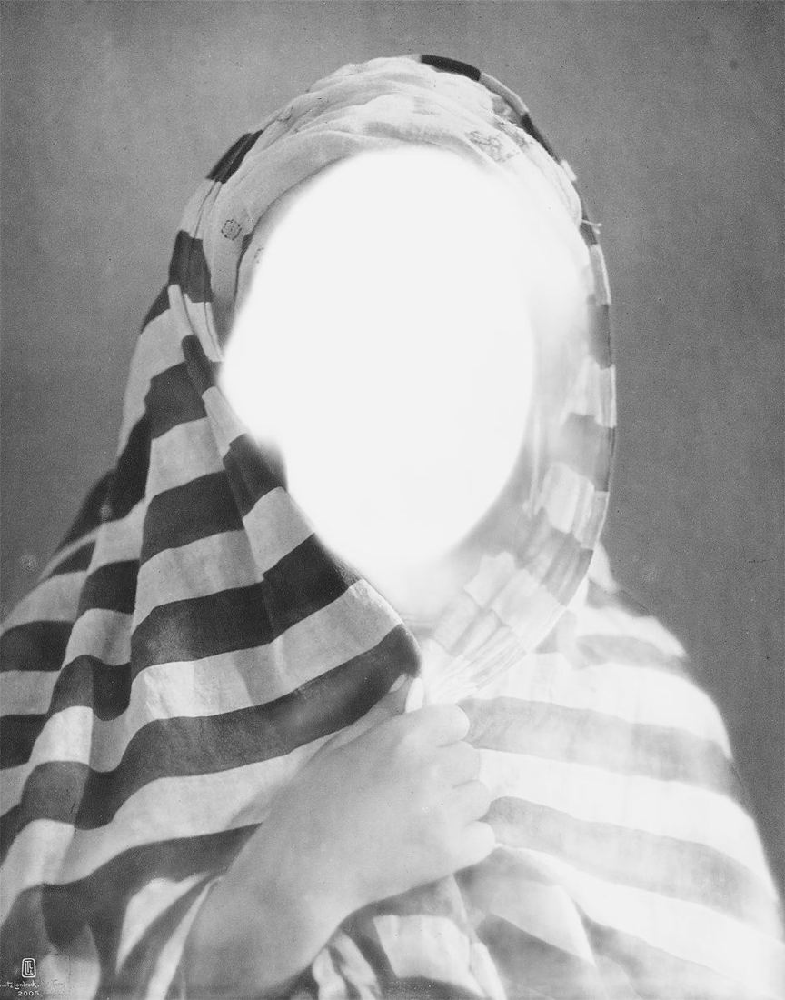
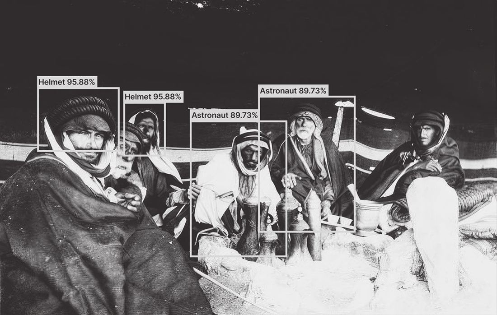
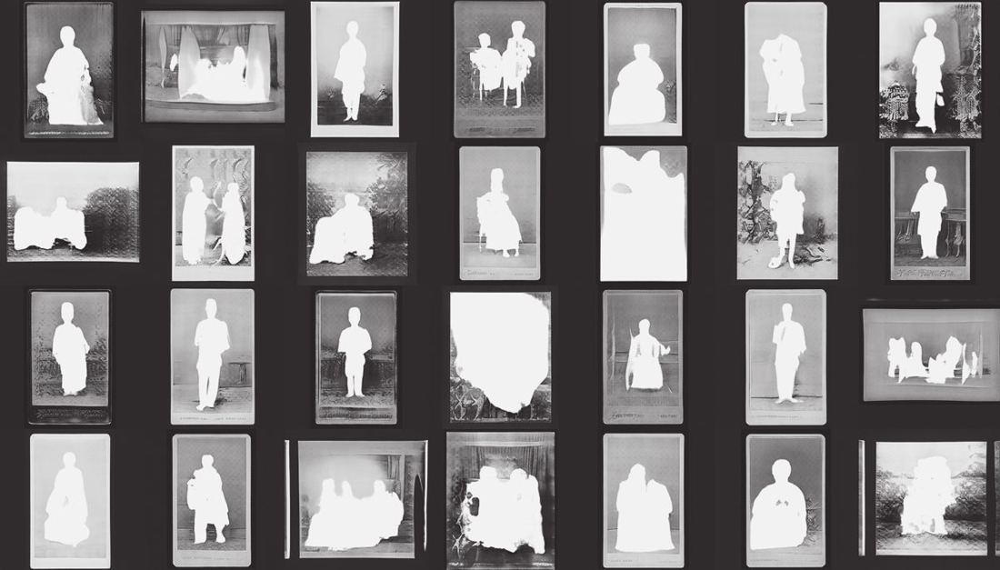

Salaf
נוף אלג'ווייסיר, 2020. אמנית ילידת סעודיה מפעילה מערכות ראייה ממוחשבת על צילומים היסטוריים של בדואים, מוחקת מהם את הדמויות, ומאמנת על התוצאה מודל גנרטיבי.



התמונות מתוך המאמר של אנטוניו סומאיני, October 196 (2026).
איזה ארכיון, ומה חסר בו
צילומי בדואים מהארכיון של גרטרוד בל, הארכיאולוגית והקצינה הבריטית, ואוסף צילומים אוריינטליסטי של מוזיאון גטי. מערכות הזיהוי שהאמנית מפעילה עליהם אומנו על דאטה מערבי, וכנראה חלקן לצרכים צבאיים. מה שחסר הוא התרבות עצמה: האנשים שבתמונות לא נכנסו לדאטה כפי שהם רואים את עצמם.
מה המרחב הלטנטי חושף ומה הוא מעלים
הוא חושף את ההטיה: חפץ בידי ילד מזוהה כ"סקייטבורד", לבוש בדואי כ"מדים צבאיים", גברים בכאפייה כ"אסטרונאוט". הוא מעלים את האנשים עצמם: גם אחרי שהאמנית מוחקת אותם, המודל הגנרטיבי ממשיך לשחזר את התנוחות האוריינטליסטיות שעליהן אומן.
האסטרטגיה
בעיקר סירוב. הדמויות הופכות לצלליות לבנות, "דאטהסט נעדר", כדי שלא יהפכו לחומר אימון. הטעויות של המכונה (סקייטבורד, מדים צבאיים, אסטרונאוט) מראות למה היא מסרבת לתת לתמונות האלה להפוך לחומר אימון.
“entire identities are erased … through the statistical biases of training data” "זהויות שלמות נמחקות […] דרך ההטיות הסטטיסטיות של נתוני האימון" Somaini, "Latent Spaces: AI, Art, and the Archive", עמ' 46
הניסוי
אלג'ווייסיר בודקת איך המכונה קוראת צילום תיעודי של תרבות שחסרה בדאטה. אני בודקת את אותה שאלה על בדיון: עשר דמויות מאגדות העם הרוסיות שאסף אלכסנדר אפאנסייב, ואיורים שלהן מאת בילבין, וסנצוב, לובוק עממי וקריק.
- שלב 1המכונה מתארתהעליתי כל איור לצ'אטבוט ושאלתי תמיד אותה שאלה: מה מוצג, מאיזה סיפור, איזו תרבות, איזו תקופה, וחמש תגיות.What is shown in this image? Which story or tradition is it from, which culture and which period? Give 5 tags.
- שלב 2המכונה מציירת מהטקסטתרגמתי לאנגלית משפט מתוך האגדה עצמה, בלי שם הדמות, וביקשתי מהמודל לצייר אותו. כל פרומפט בצ'אט חדש, פעם אחת עד שלוש פעמים.
- שלב 3המכונה מציירת מהשםלארבע דמויות ביקשתי תמונה לפי השם בלבד, כדי לבדוק מה השם פותח שהטקסט לא פתח.Generate an image: Koschei the Deathless
המהלכים מתוך המשימה: "לתת למכונה לתאר" ו"מה שחסר בדאטהסט", עם היפוך אסטרטגיה: במקום להסתיר, לחשוף. כלים: ChatGPT (תיאור ויצירת תמונות), נובמבר 2026.
האיורים שבחרתי
אלה האיורים שהעליתי לצ'אטבוט בשלב הראשון, לפי דמות. לכל דמות כתבתי גם משפט מהאגדה, ולפיו המודל צייר את התמונות שבהמשך.
אותה דמות, שלוש תמונות
במודל שבדקתי, המרחב הלטנטי זוכר איורים, לא סיפורים.
ברוב המקרים הצד הרוסי של האגדה הופיע רק כשקראתי לדמות בשמה. בלי השם, אותו סיפור צויר כאגדה אירופית. היוצאות מן הכלל הן דמויות עם סימן מוכר, כמו המכתש והמטאטא של באבא יאגה.
מה לא בסדר בתמונות
כל תמונה שהמודל יצר, עם מסגרות במקומות שבהם הוא החליף את האגדה במשהו מוכר יותר, ובמקומות שבהם דווקא שמר עליה. ברוב המקרים ההחלפות הולכות לכיוון של אגדה מערבית.
הארכיון
עשר הדמויות. העבירו את העכבר על איור כדי לראות את גרסת המכונה, ולחצו כדי לפתוח את כל החומר: המשפט מהאגדה, הפרומפט, התמונות ותשובת הצ'אטבוט.
תשובה לעבודה המקורית
אלג'ווייסיר מראה מכונה שקוראת לא נכון צילום תיעודי של תרבות שחסרה בדאטה, ועונה בסירוב: היא מוחקת את הדמויות. אני הופכת את האסטרטגיה וחושפת: מעמידה זה מול זה את האיור, את הטקסט ואת השם, ומסמנת על התמונות עצמן מה הוחלף. בניסוי שלי המודל הכיר את האגדה הרוסית, אבל ברוב המקרים הראה אותה רק כשקיבל את שם הדמות. מהטקסט בלבד הוא צייר בדרך כלל אגדה אירופית.
הערות על השיטה
- בשאלה הראשונה על הציור של וסנצוב הצ'אטבוט חיפש באינטרנט ומצא את הציור לפי מקורות חיצוניים, כך שה"זיהוי" לא תמיד מגיע מהמרחב הלטנטי. בשאלות הבאות ביקשתי בפרומפט במפורש לא לחפש באינטרנט ולענות רק לפי מה שרואים בתמונה.
- את הקולובוק העליתי כחיתוך קטן מתוך ספר משנת 1919, בלי כותרת, והצ'אטבוט לא זיהה אותו. תשעת האיורים האחרים זוהו.
- התגובות של המודל תלויות גם בזיכרון החשבון. יצרתי כל תמונה בצ'אט חדש, אבל לא בצ'אט זמני, כי הוא לא מאפשר ליצור תמונות. לכן ייתכן שהזיכרון השפיע על חלק מהתוצאות.
- כשהמודל מצייר לפי השם, הוא חוזר לדימויים שבילבין ווסנצוב יצרו בסוף המאה ה-19 ובתחילת המאה ה-20.